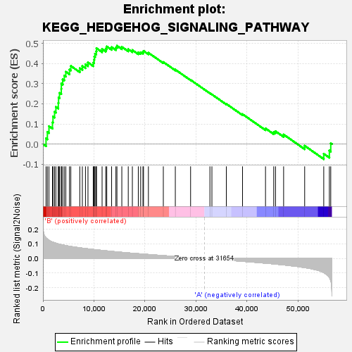
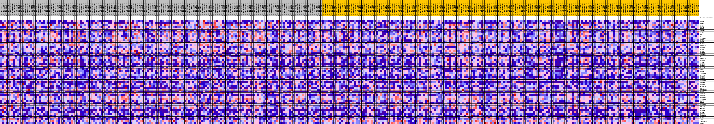
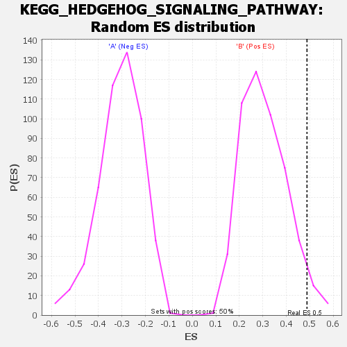

| | | Dataset | my.my.cls#B_versus_A.my.cls#B_versus_A_repos |
| Phenotype | my.cls#B_versus_A_repos |
| Upregulated in class | B |
| GeneSet | KEGG_HEDGEHOG_SIGNALING_PATHWAY |
| Enrichment Score (ES) | 0.4880973 |
| Normalized Enrichment Score (NES) | 1.6005809 |
| Nominal p-value | 0.04 |
| FDR q-value | 0.6742907 |
| FWER p-Value | 0.62 |
Table: GSEA Results Summary

Fig 1: Enrichment plot: KEGG_HEDGEHOG_SIGNALING_PATHWAY
Profile of the Running ES Score & Positions of GeneSet Members on the Rank Ordered List
| SYMBOL | TITLE | RANK IN GENE LIST | RANK METRIC SCORE | RUNNING ES | CORE ENRICHMENT | | 1 | WNT6 | na | 605 | 0.142 | 0.0280 | Yes |
| 2 | BMP7 | na | 867 | 0.133 | 0.0599 | Yes |
| 3 | SUFU | na | 1182 | 0.125 | 0.0887 | Yes |
| 4 | BMP4 | na | 1865 | 0.113 | 0.1076 | Yes |
| 5 | BTRC | na | 1970 | 0.112 | 0.1364 | Yes |
| 6 | WNT16 | na | 2276 | 0.108 | 0.1606 | Yes |
| 7 | GLI2 | na | 2537 | 0.105 | 0.1848 | Yes |
| 8 | SMO | na | 3006 | 0.101 | 0.2040 | Yes |
| 9 | DHH | na | 3063 | 0.100 | 0.2304 | Yes |
| 10 | CSNK1E | na | 3238 | 0.099 | 0.2543 | Yes |
| 11 | GLI3 | na | 3589 | 0.096 | 0.2742 | Yes |
| 12 | GAS1 | na | 3603 | 0.095 | 0.3001 | Yes |
| 13 | STK36 | na | 3868 | 0.093 | 0.3210 | Yes |
| 14 | PRKACA | na | 4181 | 0.091 | 0.3404 | Yes |
| 15 | WNT5B | na | 4481 | 0.089 | 0.3594 | Yes |
| 16 | WNT3 | na | 5196 | 0.084 | 0.3699 | Yes |
| 17 | PRKX | na | 5463 | 0.083 | 0.3879 | Yes |
| 18 | WNT8B | na | 7223 | 0.074 | 0.3770 | Yes |
| 19 | WNT10A | na | 7720 | 0.071 | 0.3878 | Yes |
| 20 | SHH | na | 8332 | 0.069 | 0.3958 | Yes |
| 21 | PRKACB | na | 8823 | 0.067 | 0.4053 | Yes |
| 22 | WNT9B | na | 9854 | 0.062 | 0.4042 | Yes |
| 23 | GLI1 | na | 10022 | 0.062 | 0.4181 | Yes |
| 24 | WNT7A | na | 10060 | 0.062 | 0.4343 | Yes |
| 25 | WNT9A | na | 10211 | 0.061 | 0.4483 | Yes |
| 26 | PTCH1 | na | 10446 | 0.060 | 0.4606 | Yes |
| 27 | WNT2 | na | 10489 | 0.060 | 0.4762 | Yes |
| 28 | WNT1 | na | 11589 | 0.056 | 0.4720 | Yes |
| 29 | CSNK1A1L | na | 12303 | 0.053 | 0.4740 | Yes |
| 30 | RAB23 | na | 12505 | 0.052 | 0.4848 | Yes |
| 31 | WNT3A | na | 13455 | 0.049 | 0.4814 | Yes |
| 32 | WNT2B | na | 14298 | 0.046 | 0.4792 | Yes |
| 33 | CSNK1D | na | 14499 | 0.046 | 0.4881 | Yes |
| 34 | WNT11 | na | 15455 | 0.043 | 0.4828 | No |
| 35 | WNT5A | na | 16716 | 0.039 | 0.4712 | No |
| 36 | PRKACG | na | 17521 | 0.036 | 0.4669 | No |
| 37 | BMP5 | na | 18684 | 0.033 | 0.4554 | No |
| 38 | CSNK1G2 | na | 19148 | 0.032 | 0.4560 | No |
| 39 | LRP2 | na | 19598 | 0.031 | 0.4564 | No |
| 40 | GSK3B | na | 19705 | 0.030 | 0.4628 | No |
| 41 | WNT7B | na | 20664 | 0.028 | 0.4535 | No |
| 42 | FBXW11 | na | 23587 | 0.020 | 0.4074 | No |
| 43 | CSNK1A1 | na | 25937 | 0.014 | 0.3697 | No |
| 44 | BMP6 | na | 28931 | 0.007 | 0.3186 | No |
| 45 | ZIC2 | na | 32715 | -0.003 | 0.2524 | No |
| 46 | CSNK1G1 | na | 33106 | -0.003 | 0.2465 | No |
| 47 | BMP8B | na | 35932 | -0.011 | 0.1994 | No |
| 48 | BMP8A | na | 39103 | -0.019 | 0.1486 | No |
| 49 | WNT8A | na | 43609 | -0.032 | 0.0777 | No |
| 50 | WNT4 | na | 45218 | -0.037 | 0.0593 | No |
| 51 | PTCH2 | na | 45568 | -0.038 | 0.0635 | No |
| 52 | WNT10B | na | 47157 | -0.044 | 0.0474 | No |
| 53 | HHIP | na | 51282 | -0.062 | -0.0086 | No |
| 54 | IHH | na | 55020 | -0.097 | -0.0481 | No |
| 55 | CSNK1G3 | na | 56120 | -0.129 | -0.0323 | No |
| 56 | BMP2 | na | 56393 | -0.151 | 0.0040 | No |
Table: GSEA details [plain text format]

Fig 2: KEGG_HEDGEHOG_SIGNALING_PATHWAY
Blue-Pink O' Gram in the Space of the Analyzed GeneSet

Fig 3: KEGG_HEDGEHOG_SIGNALING_PATHWAY: Random ES distribution
Gene set null distribution of ES for KEGG_HEDGEHOG_SIGNALING_PATHWAY